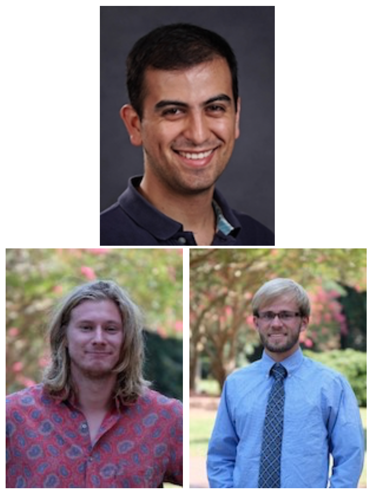
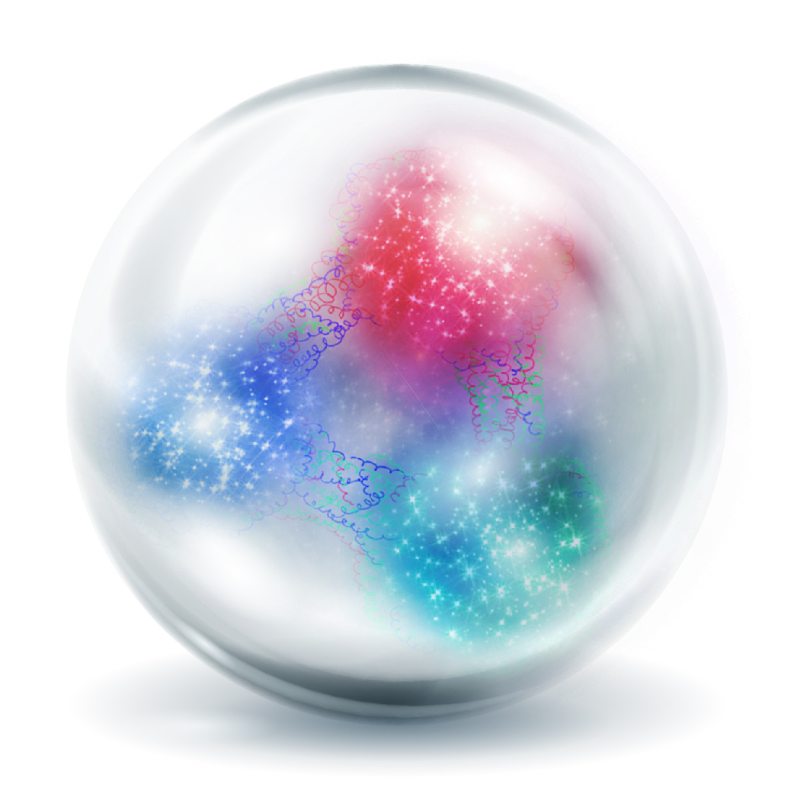
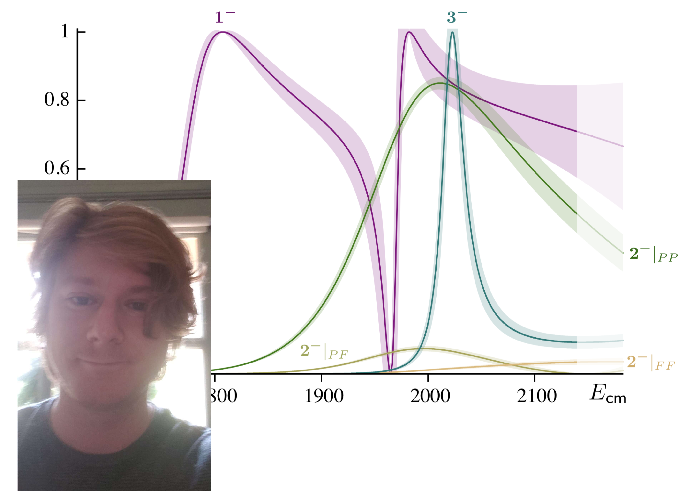
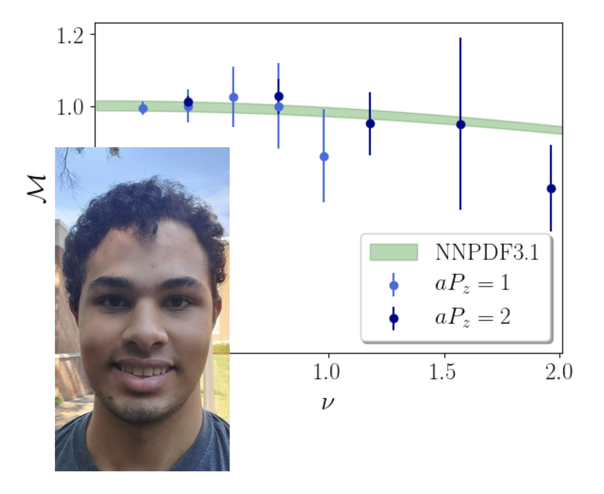
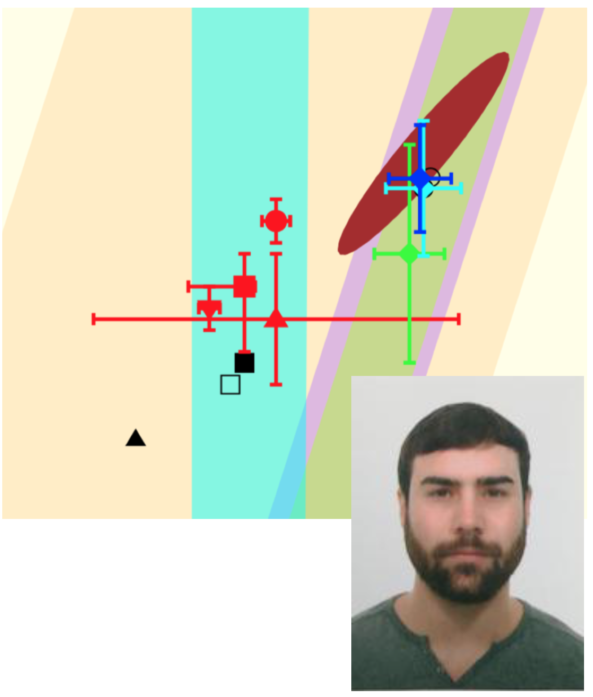

|  |
Congratulations to our graduate studentsGroup members Felipe Ortega, Chris Johnson and Colin Egerer all have reason to celebrate. Felipe was recently awarded a W&M International Student Achievement Award recognizing his explemary performance in academics and his tireless service to the college. Chris Johnson and Colin Egerer, who will both defend in the summer, have been offered postdoctoral positions at world leading centers for hadron physics. Chris will go to GSI in Darmstadt, Germany, and Colin to Jefferson Lab, where they will continue their research efforts in lattice QCD. |
|  |
Supercomputers aid scientists studying the smallest particles in the universeA recent Physical Review Letters publication, "Parton Distribution Functions from Ioffe Time Pseudodistributions from Lattice Calculations: Approaching the Physical Point", authored by a team including Kostas Orginos, adjunct group member David Richards, former graduate student Joe Karpie, and former group postdoc Savvas Zafieropoulos, was recently highlighted on the Oak Ridge National Laboratory News. See full article here. |
|  |
New preprint on $J^{--}$ resonances releasedA preprint, "Excited $J^{--}$ meson resonances at the SU(3) flavor point from lattice QCD", reporting on work done by graduate student Chris Johnson, has appeared on the arXiv. It presents lattice QCD calculations showing the presence of four excited resonances in pseudoscalar-vector scattering, following from description of an unprecedented number of finite-volume energy levels. |
|  |
Center for Nuclear Femtography grant supports summer researchOur grant Nucleon Structure from lattice QCD, awarded by the Center for Nuclear Femtography, supported undergraduate summer research by Joshua O'Cain as part of our efforts to unravel the internal structure of protons and neutrons. Working with graduate students and postdocs in our group, Joshua analyzed lattice data to extract the fraction of the momentum of a fast-moving proton carried by the gluons inside the proton. |
|  |
Arkaitz Rodas releases $\pi K$ scattering review articleGroup member Arkaitz Rodas, in collaboration with his former PhD advisor, José Ramón Peláez, has produced a comprehensive review of the physics of $\pi K$ scattering using the theoretical technique of dispersion relations. The controversial $\kappa/K^*_0(700)$ resonance and new threshold parameters are obtained. The preprint, which has been submitted to Physics Reports, can be read here. |

|
Welcome to our new postdocsTwo new postdoctoral associates have joined the group. Nikhil Karthik comes to us from Brookhaven National Lab, and Raza Sufian from Jefferson Lab. Both are experts in lattice QCD. |